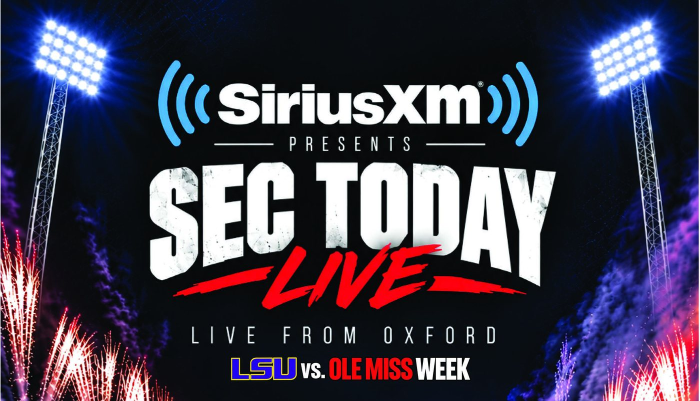
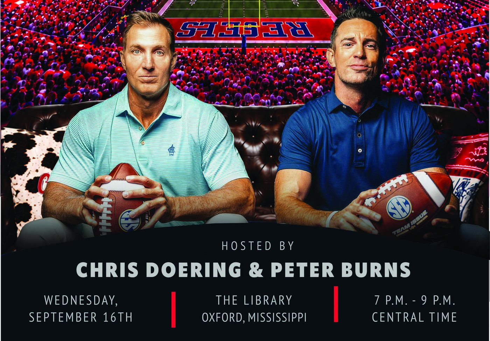
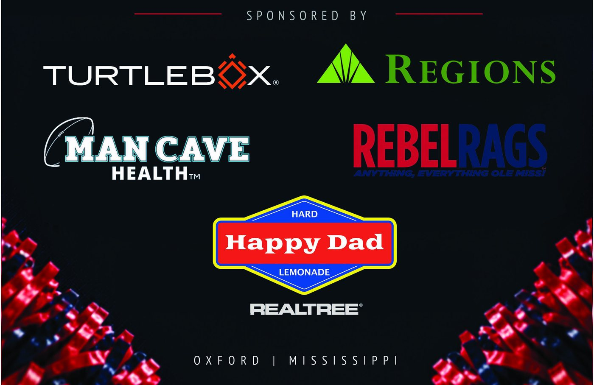
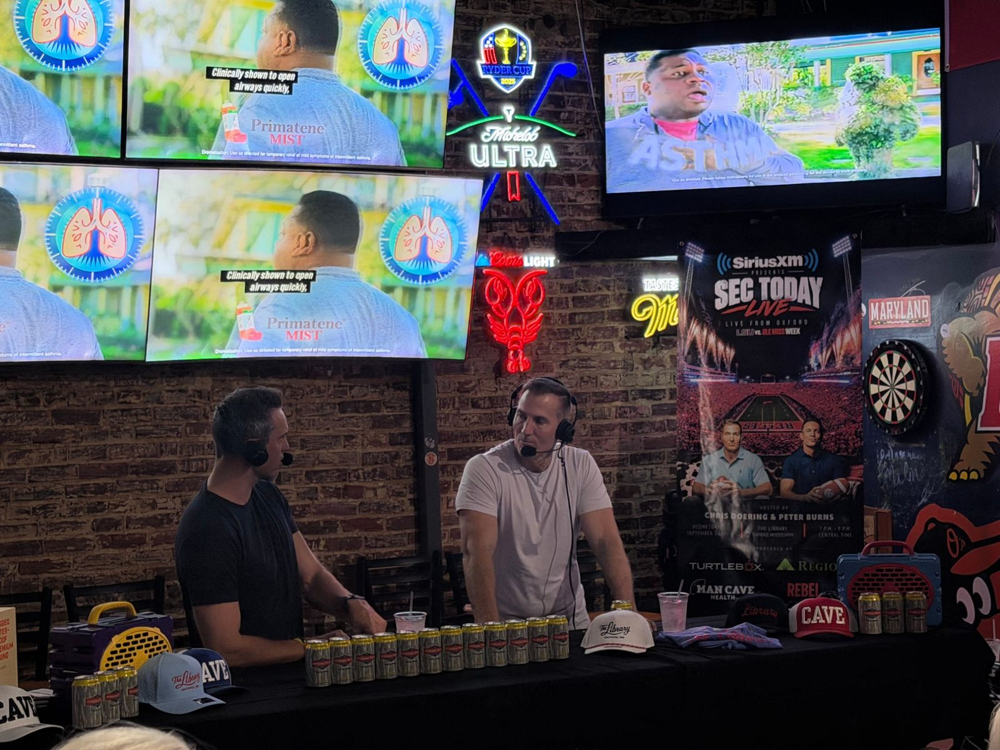

SEC Today Live — Event Poster for ESPN's SEC Network
Role: Designer · Solo project, concept through print-ready file · 2026
Client: SEC Today Live, an SEC Network show on SiriusXM

Overview
SEC Today Live is an SEC Network show carried on SiriusXM radio. For LSU vs. Ole Miss week it broadcast live from The Library in Oxford, Mississippi, hosted by Chris Doering and Peter Burns. I designed the poster that promoted the event. It was printed as full-height banners that stood at the entrance and framed the set during the show.
The brief
One vertical layout had to carry a lot of information and still read from across a crowded bar:
- The show, the network, and the "Live from Oxford" hook
- The LSU vs. Ole Miss matchup
- Both hosts
- Date, venue, and time
- Six sponsors: Turtlebox, Regions, Man Cave Health, Rebel Rags, Happy Dad, and Realtree
The final poster

Design decisions
Game-night scale. The poster opens on a packed stadium at night, with floodlights and fireworks bursting from both sides. It makes a two-hour radio show feel like a gameday event.

A clear reading order. Network, then show title, then location, then matchup. The brush-script "Live" in red breaks up the heavy title type and carries the energy of the broadcast. The matchup line uses each school's own colors.

Hosts front and center. Chris and Peter sit on a leather couch in front of the stadium, footballs in hand, so the poster feels like being invited to watch the game with them. Right below, a divided info bar gives the date, venue, and time a quick three-part scan.

Six sponsors, one system. Each logo keeps its own brand colors, arranged in a balanced two-column grid on a dark field so none of them fights the rest of the poster. Red pom-poms at the bottom corners bring back the crowd energy from the top.
In the room
The banners were printed full-height and used on-site at The Library during the live broadcast: one at the entrance and one framing the hosts' set.


My role
I designed the entire poster myself, from concept and layout to the final print-ready file.